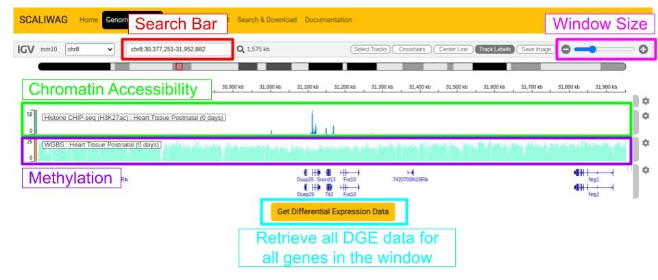
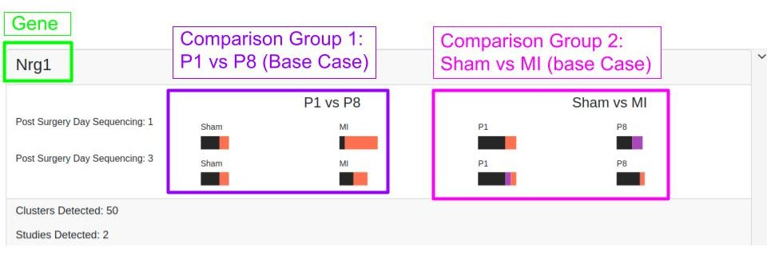

User Guide
Genome Browser

Key Features:
- Use the search bar to navigate to a specific gene

Key Features:
Pathway Enrichment

Workflow:
- Start with gene list from differential expression results
- Select ontology database (BP, MF, CC)
- Adjust FDR cutoff using slider (default q < 0.05)
- Export network diagrams or table results
Search and Download (maybe delete entirely)
Available Formats:
| Data Type | Format | Resolution |
|---|---|---|
| DEG Results | CSV, XLSX | Per-gene |
| Expression Matrix | H5AD | Single-cell |
| Pathway Results | JSON, PNG | Publication-ready |